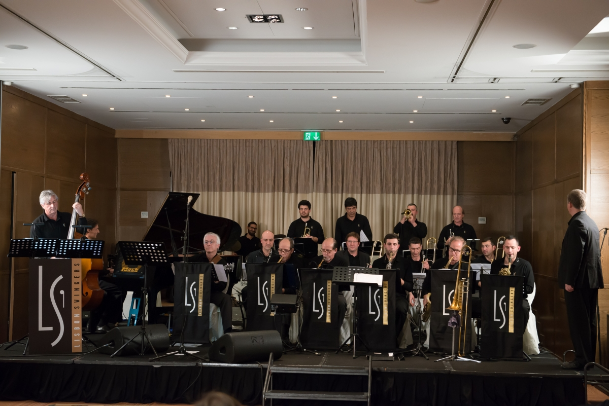
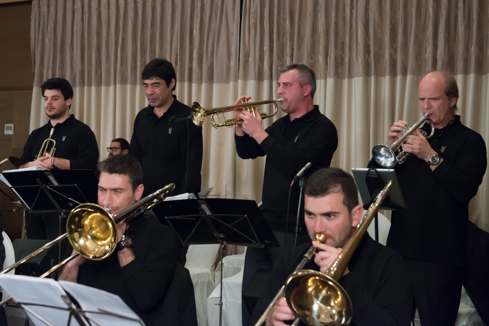
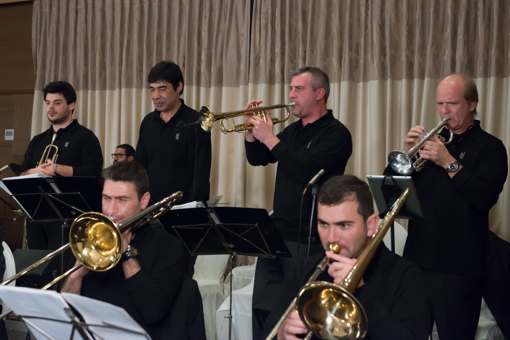
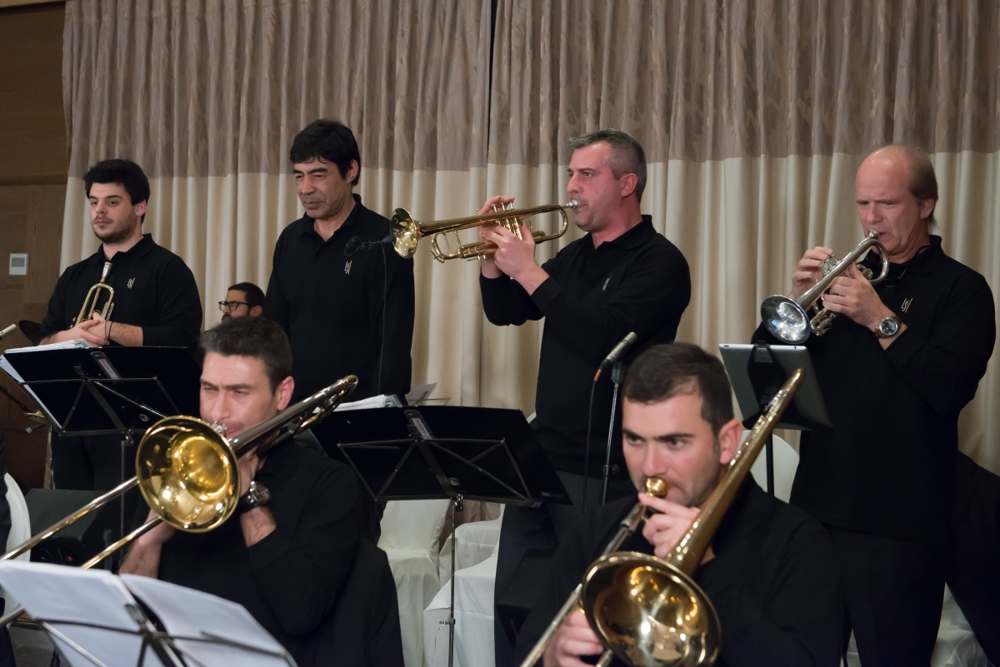
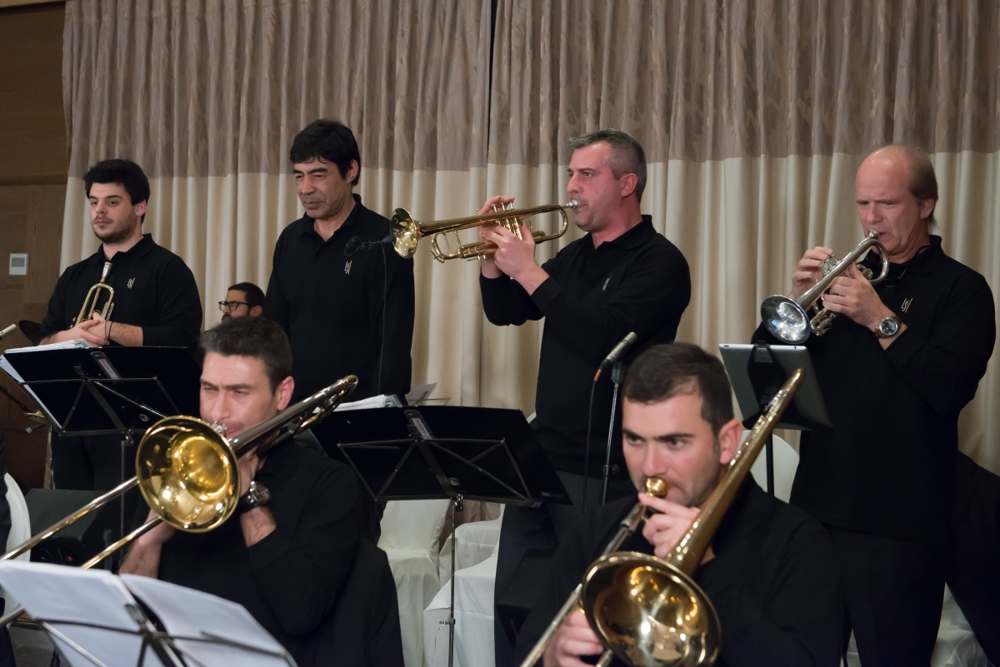

 


Somos uma BigBand contituída por um grupo de amigos que partilham o gosto pelos grandes clássicos do Jazz
A banda, dirigida pelo trombonista, mestro e arranjador Claus Nymark, é composta por secção rítmica(bateria, contrabaixo, guitarra e piano) e por uma secção de sopros(clarinete, trompetes, saxofones e trombones)
O repertório é eclético, com predominância dos grandes standards de orquestras como as de Count Basie, Duke Ellington, Artie Shaw ou Benny Goodman
Os Lisbon Swingers têm atuado um pouco por todo o país em auditórios, salas de espetáculo e também em festas públicas e particulares

Relações públicas: Miguel Faro Viana e António Pinto Barbosa
Email: TheLisbonSwingers@something.jazz
93x-xxx-xxx